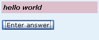

New question components should probably be created in the package om.stdcomponent.
To develop a question component a new class that is a subclass of om.stdquestion.QComponent is
required. These are typically called SomethingTypeComponent.java.
In addition to the SomethingTypeComponent.java file, you may also have one or
both of a SomethingTypeComponent.js and a SomethingTypeComponent.css file for
Javascript and styles. If either of these exist, the question engine
automatically processes them for you.
e.g. the RadioBoxComponent has java, javascript and css files.
RadioBoxComponent.java -
The java file contains the code for initialising, rendering and handling student inputs.RadioBoxComponent.js -
The javascript file typically contains event handling for student interaction with
the component on the webpage. For the RadioBoxComponent it handles the onClick event
for the radioboxRadioBoxComponent.css -
Adds styles and alignment information for the radiobox.
To add a component to Openmark you will need to edit the
om.stdcomponent.ComponentRegistry. The new class should be
added to the COMPONENTCLASSES array (alphabetical order has been used).
Once you have created the files that you need , SomethingTypeComponent .java, .js, .css
and added the component to the Component registry you will need to implement the
functionality of your new question component. There are four parts to this
outlined in the sections below.
Your component will require a tag name for use in the question.xml.
e.g. from the IndentComponent
/** @return Tag name (introspected; this may be replaced by a 1.5 annotation) */
public static String getTagName()
{
return "indent";
}
Adding parameters
QComponent has the method defineProperties() that is intended
for overriding. As default it is set to allow an 'id', 'display'(true)
and 'enabled'(true). If you require more properties then override this
method, remembering to call the superclass if you want to keep the defaults.
e.g. Your component requires a highlight property and you want to set the initial/default value to false.
/** Property name for being highlighted (boolean) */
public static final String PROPERTY_HIGHLIGHT="highlight";
@Override
protected void defineProperties() throws OmDeveloperException
{
super.defineProperties();
defineBoolean(PROPERTY_HIGHLIGHT);
setBoolean(PROPERTY_HIGHLIGHT,false);
}
init
As part of the initialisation QComponent init calls
initChildren(Element eThis). This initialises children
based on the given XML element.
The default implementation treats all child elements as components. If you want to include text as well or treat elements differently (i.e. your component will have it's own internal tags with a specific meaning) you will need to override this method.
You want to include text
e.g. from the text component
@Override
protected void initChildren(Element eThis) throws OmException
{
getQDocument().buildInsideWithText(this,eThis);
}
You do not want your component to have any child elements
e.g. from the gap component
@Override
protected void initChildren(Element eThis) throws OmException
{
if(eThis.getFirstChild()!=null) throw new OmFormatException(
" may not contain other content");
}
for examples of components with their own internal tags that are not components see the DropdownComponent, EquationComponent, TableComponent, WordselectComponent.
Instructions for how the content of the component should be built up and displayed should be done by overriding the produceVisibleOutput method.
The example below is from the GapComponent
@Override
public void produceVisibleOutput(QContent qc,boolean bInit,boolean bPlain) throws OmException
{
if(bPlain)
{
Element eDiv=qc.createElement("div");
qc.addInlineXHTML(eDiv);
XML.createChild(eDiv,"br");
}
else
{
Element eDiv=qc.createElement("div");
eDiv.setAttribute("class","gap");
qc.addInlineXHTML(eDiv);
}
}
Note that the code has an if statement for bPlain. Here if the display is to
be in plain mode then a standard html break tag is added as opposed to a
div with a class that then picks up it's spacing properties from the
GapComponent.css file, (see notes on accessibility below).
so, if in plain mode the component produces the following output in the html
<div><br /></div>
A div element is created, it is added in line and the break is added as a child to the div.
In all other modes
<div class="gap"></div>
A div element is created, it is given a class attribute called gap and is added to the XHTML.
On submission of the form (i.e. a student has clicked the submit button) then all components receive a call from the Openmark framework to the formAllValuesSet method. The QComponent default does nothing.
Items with action parameters that begin with QDocument.VALUE_PREFIX will have the method formSetValue called first on all items on submission of the form before formAllValuesSet is called.
Therefore to receive the student input you will need to override one or both of these methods.
e.g. Editfield component overrides the formSetValue method to obtain the students input to the editfield on the form and then sets the property value for this instance of the component to store the input value.
@Override
protected void formSetValue(String sValue,ActionParams ap) throws OmException
{
sValue=sValue.replaceAll("\r\n","\n");
if(getInteger(PROPERTY_ROWS)==1) sValue=trim(sValue,MAXCHARS_SINGLELINE);
setString(PROPERTY_VALUE,sValue);
}
The CanvasComponent and WordSelect component override the formAllValuesSet method. These components may need to process multiple input items (canvas markers in the case of the Canvas component and checkboxes (selected words) in the case of the WordSelect component) and this can be done in the formAllValuesSet method.
In the Canvas component case the data for each marker is fetched and the x and y position of each of the markers on the canvas is stored in turn.
@Override
protected void formAllValuesSet(ActionParams ap) throws OmException
{
if(!isEnabled()) return;
// Get marker data
double dZoom=getQuestion().getZoom();
int i=0;
for(Marker m : lMarkers)
{
if(ap.hasParameter("canvasmarker_"+getID()+"_"+i+"x"))
{
try
{
m.iX=(int)(Integer.parseInt(
ap.getParameter("canvasmarker_"+getID()+"_"+i+"x")) / dZoom);
m.iY=(int)(Integer.parseInt(
ap.getParameter("canvasmarker_"+getID()+"_"+i+"y")) / dZoom);
}
catch(NumberFormatException nfe)
{
throw new OmException("Unexpected canvas marker value");
}
}
i++;
}
}
Finally you may need methods to allow question authors to retrieve input values/parameters for components and/or set parameters for the components from the question java file.
For the Editfield Component in the example for the section above (Receiving the student's response) we have the code for retrieving the student input and storing this for the component. To allow question authors to access this value then a public method is required.
Getting the current value.
/** @return Current value of edit field. For single-line editfield,
* value is trimmed to be no more than 100 characters.
*/
public String getValue()
{
try
{
return getString(PROPERTY_VALUE);
}
catch(OmDeveloperException e)
{
throw new OmUnexpectedException(e);
}
}
Setting the current value.
/** @param sValue New value for edit field */
public void setValue(String sValue)
{
try
{
setString(PROPERTY_VALUE,sValue);
}
catch(OmDeveloperException e)
{
throw new OmUnexpectedException(e);
}
}
Accessibility is considered to be of great importance and component authors should strive to ensure that the components they develop work in the different accessibility modes, full colour, alt colours, plain mode and big mode.
Keyboard accessibility
Components that require inputs (edit boxes, check boxes, radio boxes etc) or movement (marker components) are expected to be keyboard accessible and can usually be tabbed to and gain focus. Therefore you should ensure that they are added to the list of items so that the tab order is correct by including code along the following lines in the produceVisibleOutput(...) method
if(isEnabled()) qc.informFocusable(eInput.getAttribute("id"),bPlain);
Colours
Time has been spent ensuring that any colours used are as user friendly as possible.
These are defined in QComponent, om.stdquestion.QComponent.
Where possible developers should use these predefined colours. If used in the
components .css file then the colours will be automatically adjusted as users move
through the different colour options.
e.g. You will see the following in some of the .css files
border:1px solid %%COLOUR:text%%
where a border is being drawn with the current text colour.
Note that colour should not be used alone to denote a change of state for components. If you have a selectable component then in addition to a colour change you should also consider the use of a border/underline to indicate when a component has been selected or highlighted.
e.g. radiobox and checkbox components use a single line border to show when highlighted, the wordselect component uses both single and double underlines.
In the openmark_public java project go to src.om.stdcomponent
1. Go to the GapComponent.java and save as HelloComponent.java
2. Go to the GapComponent.css and save as HelloComponent.css
3. Open ComponentRegistry.java and add HelloComponent.class to the array of classes
open HelloComponent.java
4. change public class GapComponent extends QComponent to public class HelloComponent extends QComponent
5. in getTagName change gap to hello
public static String getTagName()
{
return "hello";
}
6. in initChildren change <gap> to <hello>
@Override
protected void initChildren(Element eThis) throws OmException
{
if(eThis.getFirstChild()!=null) throw new OmFormatException(
"<hello> may not contain other content");
}
7. create the output for the component by changing produceVisibleOutput to create a division with a class attribute called hello, containing the text hello world.
@Override
public void produceVisibleOutput(QContent qc,boolean bInit,boolean bPlain) throws OmException
{
Element div=qc.createElement("div");
div.setAttribute("class","hello");
XML.createText(div, "hello world");
qc.addInlineXHTML(div);
}
open HelloComponent.css
8. Add some styles by deleting .om . gap and adding .om .hello
.om .hello
{
padding:4px;
background-color: %%COLOUR:innerbg3%%;
font-style:italic;
font-weight:bold;
}
9. Run the ant build on openmark_ou project to build your new component into Openmark.
test the component by using it in a question.
10. Create a test question, or use an existing one, in the openmark_ou project in the testquestions folder.
11. To the question.xml add the hello tag i.e. <hello/> in an appropriate place
12. In the question development environment build your question.
N.B make sure you use the correct paths to the openmark_ou project and not the omqstns project. i.e. Source tree = C:\Documents and Settings\xyzz\workspace\openmark_ou\testquestions
the result should look something like this
